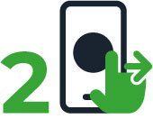
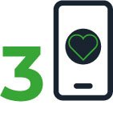
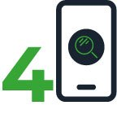
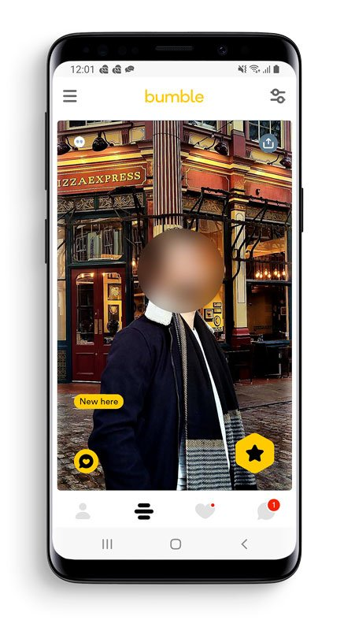
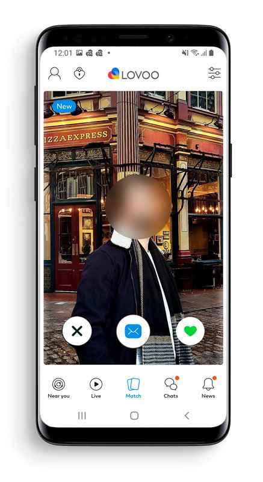
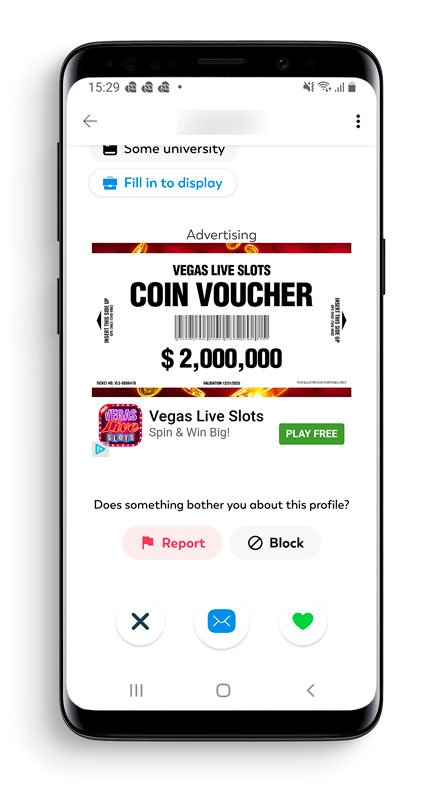

Résumé de l’article
En 2022, un tiers des français a utilisé une application de rencontre. Mais ça a quel impact environnemental de chercher l’amour ?
Nous avons mesuré les 10 applications mobiles de rencontres les plus populaires (sur un parcours utilisateur commun).
Voici le Flop 3 (les applis les plus impactantes) : Lovoo, Grindr et OkCupid.
Voici le Top 3 (les applis les moins impactantes) : Bumble, Tinder et Happn.
Le chiffre impactant : Projeté sur un mois, l’impact de ces 10 applications de rencontres est de 9614 tonnes EqCO2. C’est équivalent à parcourir 1102 fois la circonférence de la Terre en voiture à moteur thermique (en comptant 23 millions d’utilisateurs français ayant une moyenne d’utilisation de 55 minutes par jour).
A savoir que nombreux sont ceux qui utilisent plusieurs applications (autant maximiser ses chances 😉 )
Depuis la création de la fonctionnalité de géolocalisation pour les smartphones, les applications de rencontre ont connu une grande popularité. Aujourd’hui, on en recense plus de 8000 dans le monde, dont 2000 en France. Près d’un tiers des français utilisent ou ont déjà utilisé une application de rencontre. Les utilisateurs passeraient 55 minutes par jour dessus.
Au regard de ces chiffres, nous pouvons nous interroger quant à l’impact de ces applications sur l’environnement.
Les applications de rencontre que nous avons choisi de mesurer
Trois critères ont compté pour choisir les 10 applications évaluées : la popularité, la gratuité et la disponibilité sur Android. En effet, nous avons choisi d’évaluer des applications dont l’utilisation est gratuite car elles figurent parmi les plus utilisées. Moins de 3% des français ont recours à des applications payantes.
Au sujet de l’évaluation, nous avons déterminé un scénario commun compatible pour toutes les applications, à savoir la consultation de profils, aimer ou non le profil et envoyer un message. Cela permet de se rapprocher le plus possible d’un usage réel de l’application.
Etape 1 : Lancement de l’application

Etape 2 : Disliker un profil (en swipant ou cliquant sur “rejeter”)

Etape 3 : Liker un profil (ou envoyer une tap, en swipant ou cliquant sur “aimer”)

Etape 4 : Consulter les détails d’un profil (en scrollant)
Etape 5 : Liker le profil (ou envoyer une tap, en swipant ou cliquant sur “aimer”)
Etape 6 : Consulter la dernière conversation
Etape 7 : Envoyer un message dans cette conversation
Classement de l’empreinte environnementale des 10 applications de rencontre gratuites les plus utilisées en France
Les 3 applications les plus impactantes : Lovoo, Grindr et OkCupid.
Les 3 applications les moins impactantes : Bumble, Tinder et Happn.
Nous constatons que l’application la plus impactante (Lovoo) a un impact 5 fois supérieur à celui de l’application la moins impactante (Bumble).
La moyenne de l’impact carbone de ces applications est de 0,25 gEqCO2 pour une durée moyenne de 25 secondes. C’est équivalent à parcourir 1 mètre en voiture à moteur thermique.
Projection des impacts carbone sur un mois

Pour projeter l’impact des applications de ce classement, nous allons utiliser les hypothèses suivantes :
- 100 % des utilisateurs sont en France
- 100 % des utilisateurs sont sur mobile
Différentes études révèlent qu’un tiers de la population française (23 millions d’individus) a utilisé les applications de rencontre en 2022 avec une moyenne de 55 minutes passées dessus.
Projeté sur un mois, l’impact de ces 10 applications de rencontre est de 9614 tonnes EqCO2. C’est équivalent à parcourir 1102 fois la circonférence de la Terre en voiture à moteur thermique.
Pour l’application la mieux classée (Bumble), pour une durée moyenne de 55 minutes par jour pendant un mois, un utilisateur a un impact de 579 gEqCO2. Cela correspond à parcourir 2,7 kilomètres en voiture à moteur thermique.
Pour l’application la moins bien classée (Lovoo), pour une durée moyenne de 55 minutes par jour pendant un mois, un utilisateur a un impact de 2,7 kgEqCO2. Cela correspond à parcourir 12,4 kilomètres en voiture à moteur thermique.
Le focus de nos experts Greenspector sur l’application la plus sobre : Bumble

L’application Bumble tient sa sobriété particulièrement des phases de lancement et d’ouverture de la page des messages. Pendant ces phases, peu de données sont chargées et il n’y a pas de surconsommations énergétiques majeures.
Sur la page où s’affichent les profils, seul 4 environ sont préchargés. Les animations sont également limitées pendant les actions sur l’application et un chargement différé des photos a été implémenté pour celles qu’on ne voit pas à l’écran.
Le focus de nos experts Greenspector sur l’application la moins sobre : Lovoo


L’application Lovoo se retrouve en bas du classement avec un impact bien plus élevé que ses concurrents. Bien que la performance soit excellente à l’exception de l’ouverture de l’application qui est plutôt longue, la consommation en termes d’énergie et de données est très élevée. L’intégration de la publicité omniprésente avec des carrousels ou des vidéos contribue grandement à ces surconsommations.
L’ouverture de la page pour swiper charge en moyenne 1,9 Mo de données. De nombreux profils sont préchargés pour être affiché avec fluidité après chaque swipe par rapport aux applications concurrentes. Plus de 20 profils sont préchargés contre 4 environ sur les autres applications.
Bilan
Entre l’application de rencontre la plus sobre et l’application la moins sobre, nous retenons que l’impact est 5 fois plus important.
Notons que les différences sont pour la plupart dues aux animations, aux chargements conséquents de données (photos, vidéos…) et à la gestion des éléments affichés à l’écran. En appliquant de bonnes pratiques, il est possible de réduire l’impact environnemental des applications.
En tant qu’utilisateur, il est possible de réduire son impact en n’utilisant qu’une seule application de rencontre si nous en avons plusieurs.
Et pour aller plus loin dans la sobriété numérique, il est toujours possible de faire des rencontres dans la vie réelle !
Tableau des résultats
| Classement | version | Ecoscore | Energie | Données échangées | Mémoire | Requêtes | Carbon Impact (gEqCO2) | Empreinte Eau (Litres) | Empreinte Sol (cm2) |
|---|---|---|---|---|---|---|---|---|---|
| 1 | https://kleis.ch/ | 89 | 4,79 | 0,55 | 560,80 | 14 | 0,23 | 0,04 | 0,53 |
| 2 | https://commown.coop/ | 77 | 4,41 | 0,37 | 781,06 | 8 | 0,20 | 0,04 | 0,49 |
| 3 | https://hubblo.org/fr/ | 77 | 4,88 | 0,15 | 554,14 | 26 | 0,24 | 0,04 | 0,55 |
| 4 | https://www.specinov.fr/ | 76 | 4,53 | 0,25 | 680,25 | 16 | 0,21 | 0,04 | 0,50 |
| 5 | http://lewebvert.fr/ | 76 | 4,77 | 0,20 | 828,38 | 20 | 0,23 | 0,04 | 0,53 |
| 6 | https://fresquedunumerique.org/ | 75 | 4,36 | 0,89 | 676,91 | 33 | 0,24 | 0,04 | 0,49 |
| 7 | https://thegreencompagnon.com/ | 74 | 4,68 | 0,47 | 861,89 | 14 | 0,22 | 0,04 | 0,52 |
| 8 | http://laruchequicode.com/ | 74 | 4,62 | 0,40 | 722,78 | 23 | 0,23 | 0,04 | 0,52 |
| 9 | https://www.treebal.green/ | 74 | 4,58 | 0,43 | 819,20 | 27 | 0,23 | 0,04 | 0,52 |
| 10 | https://smart-consultant.fr/ | 73 | 4,56 | 0,65 | 659,92 | 15 | 0,22 | 0,04 | 0,51 |
| 11 | https://greenspector.com/ | 73 | 4,68 | 0,42 | 638,41 | 36 | 0,25 | 0,04 | 0,53 |
| 12 | https://www.fruggr.io/ | 73 | 5,19 | 1,42 | 849,56 | 16 | 0,26 | 0,05 | 0,58 |
| 13 | https://algorila.com/ | 72 | 4,81 | 0,32 | 769,02 | 18 | 0,23 | 0,04 | 0,53 |
| 14 | https://nuageo.fr/ | 72 | 4,87 | 0,35 | 853,77 | 21 | 0,23 | 0,04 | 0,54 |
| 15 | https://greenoco.io/ | 71 | 4,88 | 1,62 | 760,39 | 39 | 0,28 | 0,05 | 0,56 |
| 16 | https://www.appyuser.com/ | 71 | 5,34 | 2,50 | 690,71 | 52 | 0,33 | 0,06 | 0,61 |
| 17 | https://aguaro.io/fr | 70 | 4,09 | 1,09 | 655,25 | 38 | 0,24 | 0,04 | 0,47 |
| 18 | https://infogreenfactory.green/ | 69 | 4,59 | 0,38 | 784,44 | 22 | 0,22 | 0,04 | 0,51 |
| 19 | https://aeonics.io/ | 69 | 4,46 | 0,51 | 715,91 | 26 | 0,23 | 0,04 | 0,50 |
| 20 | https://conserto.pro/ | 69 | 4,75 | 0,33 | 733,29 | 18 | 0,23 | 0,04 | 0,53 |
| 21 | https://evea-conseil.com/fr | 68 | 4,51 | 6,48 | 724,53 | 98 | 0,42 | 0,06 | 0,55 |
| 22 | https://www.esaip.org/ | 66 | 4,54 | 1,11 | 720,32 | 41 | 0,26 | 0,04 | 0,52 |
| 23 | https://www.chg-meridian.fr/ | 66 | 5,27 | 1,99 | 872,71 | 27 | 0,29 | 0,05 | 0,59 |
| 24 | https://lecko.fr/greet/ | 66 | 4,83 | 2,46 | 927,45 | 57 | 0,32 | 0,05 | 0,56 |
| 25 | https://www.planet-techcare.green/ | 66 | 4,86 | 2,14 | 865,60 | 63 | 0,32 | 0,05 | 0,57 |
| 26 | https://groupe-isia.com/ | 65 | 4,98 | 0,87 | 618,44 | 23 | 0,25 | 0,05 | 0,56 |
| 27 | https://www.wedolow.com/ | 65 | 5,05 | 1,37 | 873,91 | 42 | 0,29 | 0,05 | 0,58 |
| 28 | https://www.luminess.eu/ | 65 | 5,06 | 3,02 | 699,61 | 38 | 0,31 | 0,05 | 0,58 |
| 29 | https://mind7.com/ | 64 | 5,19 | 1,40 | 980,03 | 28 | 0,27 | 0,05 | 0,58 |
| 30 | https://www.cisco.com/site/fr/fr/index.html | 64 | 4,56 | 1,80 | 768,97 | 80 | 0,32 | 0,05 | 0,54 |
| 31 | https://mavana.earth/ | 63 | 4,75 | 0,81 | 691,11 | 53 | 0,28 | 0,05 | 0,55 |
| 32 | https://www.alterway.fr/ | 63 | 4,80 | 0,70 | 790,25 | 53 | 0,28 | 0,05 | 0,55 |
| 33 | https://connexing.co/ | 63 | 4,93 | 4,50 | 670,17 | 41 | 0,34 | 0,05 | 0,57 |
| 34 | https://www.fairphone.com/fr/ | 62 | 5,10 | 3,29 | 836,86 | 70 | 0,36 | 0,06 | 0,60 |
| 35 | https://www.monsitevert.fr/ | 60 | 5,26 | 1,25 | 797,13 | 24 | 0,27 | 0,05 | 0,59 |
| 36 | https://www.preo-ag.com/fr | 60 | 5,44 | 2,32 | 942,09 | 57 | 0,34 | 0,06 | 0,63 |
| 37 | https://carbonscore.fr/ | 59 | 5,83 | 1,67 | 691,48 | 16 | 0,29 | 0,05 | 0,65 |
| 38 | https://www.apl-datacenter.com/fr/ | 58 | 4,83 | 1,58 | 855,30 | 75 | 0,32 | 0,05 | 0,57 |
| 39 | http://www.magellan-consulting.eu | 57 | 4,92 | 6,75 | 847,68 | 143 | 0,50 | 0,07 | 0,62 |
| 40 | http://ijo.tech/ | 56 | 5,25 | 1,62 | 885,77 | 30 | 0,28 | 0,05 | 0,59 |
| 41 | https://www.capefoxx.com/ | 56 | 5,31 | 2,36 | 708,23 | 49 | 0,32 | 0,05 | 0,61 |
| 42 | http://agence-lucie.com/ | 56 | 5,53 | 2,99 | 558,45 | 99 | 0,41 | 0,06 | 0,66 |
| 43 | https://www.soprasteria.com/fr/accueil | 55 | 5,18 | 9,43 | 895,83 | 35 | 0,43 | 0,06 | 0,60 |
| 44 | https://holomea.com/ | 61 | 4,96 | 2,77 | 964,79 | 34,00 | 0,30 | 0,05 | 0,56 |
| 45 | https://www.formulemagique.com/ | 53 | 5,45 | 1,05 | 888,90 | 84 | 0,35 | 0,06 | 0,64 |
| 46 | https://www.easyvirt.com/ | 51 | 5,55 | 2,51 | 900,22 | 102 | 0,40 | 0,06 | 0,66 |
| 47 | https://www.colibris.app/ | 50 | 6,82 | 2,61 | 894,97 | 59 | 0,40 | 0,07 | 0,78 |
| 48 | https://www.weeedoit.com/ | 49 | 5,32 | 2,52 | 847,77 | 103 | 0,39 | 0,06 | 0,64 |
| 49 | https://www.fujitsu.com/fr/ | 49 | 6,11 | 7,54 | 816,09 | 95 | 0,51 | 0,07 | 0,73 |
| 50 | https://www.ecologic-france.com/ | 47 | 5,33 | 2,15 | 941,95 | 33 | 0,30 | 0,05 | 0,60 |
| 51 | https://www.wecount.io/ | 47 | 6,72 | 3,15 | 719,61 | 43 | 0,39 | 0,07 | 0,76 |
| 52 | https://sopht.com/ | 46 | 5,32 | 2,81 | 852,10 | 128 | 0,43 | 0,07 | 0,65 |
| 53 | https://www.sentrysoftware.com/ | 43 | 7,96 | 15,15 | 935,47 | 87 | 0,71 | 0,10 | 0,94 |
| 54 | https://www.scaledynamics.com/ | 41 | 6,81 | 3,77 | 876,22 | 83 | 0,45 | 0,07 | 0,79 |
| 55 | https://www.hp.com/fr-fr/home.html | 38 | 6,33 | 2,02 | 774,44 | 72 | 0,39 | 0,07 | 0,73 |
| 56 | https://www.technogroup.com/ | 38 | 6,29 | 12,71 | 756,05 | 91 | 0,60 | 0,08 | 0,75 |
| 57 | https://www.escapegameenligne.com/ | 37 | 6,22 | 3,66 | 819,64 | 134 | 0,49 | 0,08 | 0,76 |
| 58 | https://alternative-group.com/ | 36 | 7,60 | 6,29 | 772,08 | 88 | 0,54 | 0,08 | 0,89 |
| 59 | https://harington.fr/ | 35 | 5,93 | 7,05 | 987,21 | 74 | 0,46 | 0,07 | 0,70 |
| 60 | http://www.ecodair.org/ | 34 | 7,91 | 3,71 | 730,61 | 103 | 0,52 | 0,09 | 0,92 |
| 61 | https://greenly.earth/fr-fr | 29 | 6,47 | 5,64 | 944,98 | 245 | 0,67 | 0,10 | 0,85 |
Pour chacune des applications, mesurées sur un Samsung Galaxy S9 (Android 10), les mesures ont été réalisées à partir de scripts utilisant le langage GDSL (Greenspector Domain-Specific Language). Ce langage permet d’automatiser des actions à réaliser sur un téléphone. Les mesures ont été réalisées durant le mois de février 2023.
Détails du scénario :
- Disliker un profil
- Liker un profil
- Consulter les détails d’un profil (voir les informations et les différentes photos) et le liker
- Aller dans la boîte de réception et envoyer un message dans la dernière conversation entretenue
Chaque mesure est la moyenne de 5 mesures homogènes (avec un faible écart-type). La consommation mesurée sur un smartphone donné selon un réseau de type wifi peut être différente si l’on est en 4G ou 3G.
Côté projection de l’empreinte, les paramètres pris en compte pour réaliser ces classements sont :
- Ratio de visualisation : 100% Smartphone
- Ratio de visualisation : 100% France
- Localisation des serveurs : 100% Monde